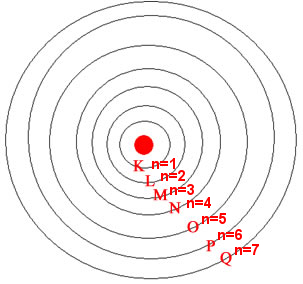
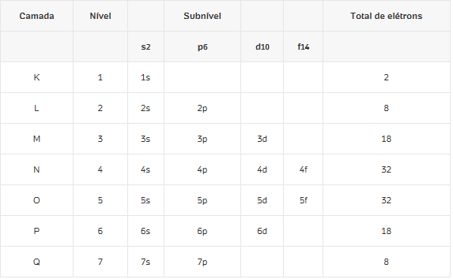

Página Inicial > Quimica > Distribuição eletrônica
Distribuição eletrônica

O modelo atômico de Rutherford mostra que o átomo possui um núcleo com prótons e nêutrons. Admite-se a existência de 7 camadas eletrônicas, designados pelas letras maiúsculas:
K, L, M, N, O, P e Q. À medida que as camadas se afastam do núcleo, aumenta a energia dos elétrons nelas localizados.
Como a seguinte imagem demostra:
No entanto, os elétrons não se distribuem de qualquer forma nessas camadas, havendo, portanto, algumas regras a serem seguidas para essa distribuição. Por exemplo, a primeira camada (K) suporta no máximo 2 elétrons e a última camada(Q) suporta 98 elétrons.
Esses e outros fatores ocorrem porque os elétrons distribuem-se nas camadas eletrônicas de acordo com subníveis de energia, que são identificados pelas letras s
, p
, d
, f
, que aumentam de energia nessa ordem respectiva. Cada nível comporta uma quantidade máxima de elétrons distribuídos nos subníveis de energia. Para tornar mais fácil a distribuição dos elétrons dos átomos nas camadas eletrônicas, o cientista Linus Pauling (1901-1994) criou uma representação gráfica que facilitou a visualização da ordem crescente de energia e a realização da distribuição eletrônica. Essa representação passou a ser chamada de Diagrama de Pauling, como mostra a primeira ilustração desta página.
Mas, antes de realizar a distribuição eletrônica de um átomo por meio do Diagrama de Pauling, é necessário saber qual a quantidade máxima de elétrons que pode ser distribuída em cada nível e subnível. Isso está esclarecido a seguir:
Além disso, lembre-se de que os elétrons vão preenchendo esses subníveis de acordo com a ordem crescente de energia, que, no Diagrama de Pauling, é dada pelo sentido das setas.
Agora vamos a parte prática com alguns exercicios:
Vamos fazer a distribuição eletrônica do cloro (Cl), no qual o número atômico (Z - número de prótons) é igual a 17
Visto que está no estado fundamental, a quantidade de elétrons e de prótons é igual, ou seja, temos que distribuir 17 elétrons. Começaremos pelo subnível 1s, onde só cabem 2 elétrons, e continuaremos preenchendo e seguindo as setas até completar 17 elétrons:

Observe que a distribuição eletrônica do cloro em subníveis de energia é dada por: 1s2 2s2 2p6 3s2 3s5.Já a distribuição eletrônica por camadas foi: 2 – 8 – 7, ou seja, o átomo desse elemento possui 2 elétrons na camada K, 8 elétrons na camada L e 7 elétrons na camada M.